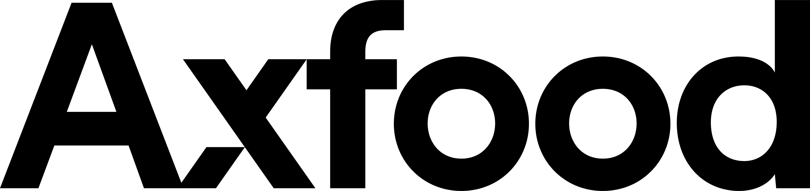

Rankings Food, drinks & restaurants Axfood

Axfood
56
15070100
A view of the same findings, not a new score. How it works
A good business with a real question mark: the price, a crack, or both.
Biggest deductions
- Absolute price level−4
- Competition and market share−4
- ROIC and capital allocation−4
Strengths
- Defensive market position+2
- Logistics center in operation+1
How the score is built
From 100 to 56, step by step: points off for the business, the price and the cracks, back for documented strengths, then three data adjustments.
Start
Score
Hover or select a step to see what drove it. Steps with findings open them below.
Key numbers
As of 9 Oct 2026. Analyst targets tend to be optimistic; read upside as a hint, not a forecast.
- Price
- 258.30 SEK
- Median analyst target
- 250.00 SEK
- Upside to median
- −3.2%
- Analysts
- 7
- Target range
- 215.00 – 295.00 SEK
- 52-week change
- −8%
- P/E (trailing)
- 23.0
- Forward P/E
- 21.4
- PEG
- 4.39
Findings
Every deduction and every plus, with its source. Open a step to read them.
Business
Is the company getting stronger, not just bigger? · 2 findings−7 of −30
- −4ROIC and capital allocationROIC has fallen from 20.3% (2021) and 17.9% (2023) to 13.0% after the automated logistics centre in Bålsta and the purchase of City Gross (DKK 1.56bn in 2024); net debt/EBITDA has risen from 1.9 to 3.0 incl. leasing.
- −3Quality of growthRevenue has risen 55% since 2021 (DKK 57.9 to 89.9bn), but EPS only from 10.24 to DKK 11.22 (about 2% a year), and the operating margin is stuck at 4.1-4.6%. Analysts expect 2.3% revenue growth and 2.7% EPS growth in 2026 - bigger, not stronger.
Price
Today's multiples against the company's own history and its peers. · 3 findings−10 of −35
- −3Multiples vs own historyForward P/E 20.9 and trailing P/E 22.6 are at the bottom of its own history (20.3–27.1 and 23.0–26.8 in 2021–2025), and EV/EBIT 19.2 in the middle of the range 17.6–23.0 – but the history is high for a grocery chain with 2–3% growth.
- −3PeersForward P/E 20.9 vs 18.4 for Kesko and 11.2 for Ahold Delhaize; EV/EBIT 19.2 vs 18.9 and 11.7.
- −4Absolute price levelFCF yield after leasing only about 3.5% (P/FCF about 29) and earnings yield 4.5%; PEG 4.3 shows a high price for the low growth. The median price target is only 1.5% above the share price.
Cracks
Cash flow, customers, debt, insiders, guidance and what sits behind the headline numbers. · 4 findings−8 of −35
- −4Competition and market shareWillys grew only 1.0% in Q2 vs 3.7% for the market; management points to food deflation and sharp price competition, and the adjusted operating margin stood still at 4.2% despite the VAT cut.
- −2Debt and dividend coverThe dividend (DKK 1,939m TTM) exceeds FCF after leasing (DKK 1,899m); debt incl. leasing DKK 15.9bn, current ratio 0.65 and net debt/equity 2.2.
- −1The City Gross turnaroundCity Gross (bought 2024) previously had an operating margin of −2.4% and only turned a profit in Q4 2025 (+DKK 14m); in Q2 2026 management's ambition is still only to reach a profit during the second half.
- −1GovernanceThe Axel Johnson group owns about half of the shares (free float 105 of 216m shares) and effectively controls the company.
Plus
Only documented strengths. · 2 findings+3 of +15
- +2Defensive market positionSweden's second-largest grocery group with Willys (low price) and Hemköp, which grew 7.4% in Q2; beta 0.56, and the dividend has been raised six years in a row.
- +1Logistics center in operationThe automated logistics centre in Bålsta is operating for both stores and e-commerce, so the heavy investment phase is over; capex has fallen from DKK 2.2bn (2022) to DKK 1.5bn TTM.
Caveats
What the score does not capture, or where the data is weak.
Stockanalysis' FCF (DKK 4,368m TTM, P/FCF 12.5) is before lease payments of DKK 2,469m; FCF after leasing is DKK 1,899m (P/FCF about 29). EV/EBITDA 9.1 is not comparable with history (13–18) due to a data change – P/E and EV/EBIT are used. The temporary halving of the food VAT (12% to 6% from 1/4 2026 to 31/12 2027) distorts revenue comparisons. Axel Johnson owns about half of the shares. Insider trades not examined. Q3 report 22/10.
Also in Food, drinks & restaurants
The highest scores in the same industry.